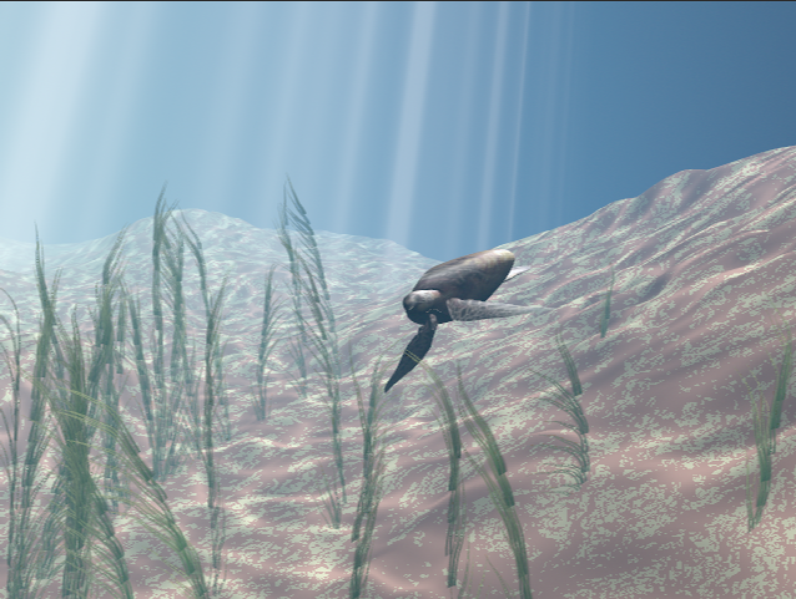
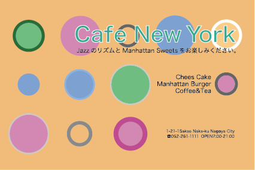
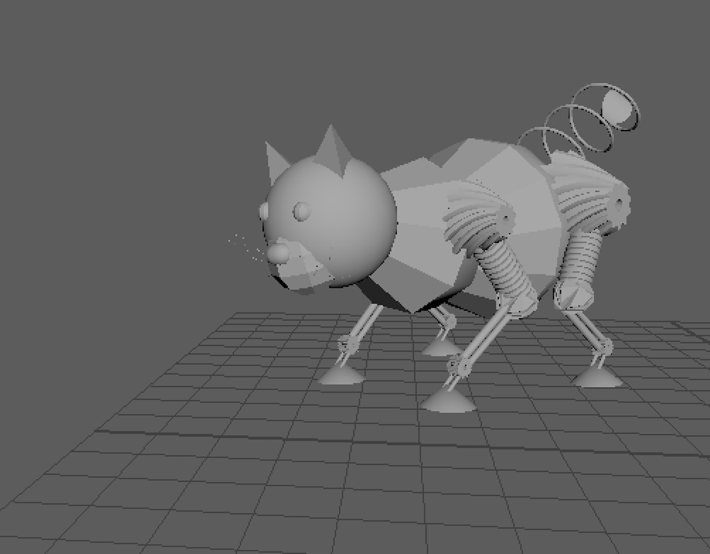
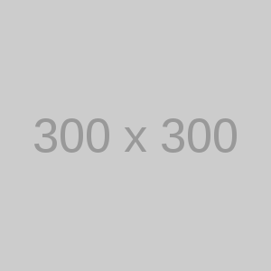

作品一覧
-

ロボットアニメーション
- 制作期間
- 1ヶ月程度
- 使用ソフト
- Maya
説明
工場などにありそうな物をつかめるロボットを作成しました。
物の形を検知し、仕分けをするアニメーションをつけました。 -
-

-
-

-

プロフィール
竹中隼
2001年7月30日生まれ
スキル
- Maya
- Adobe Photoshop
- Adobe Illustrator
- Adobe XD
- Adobe Animate
取得資格
- ITパスポート
- 情報技術検定3級
- 電気工事士検定2級 など